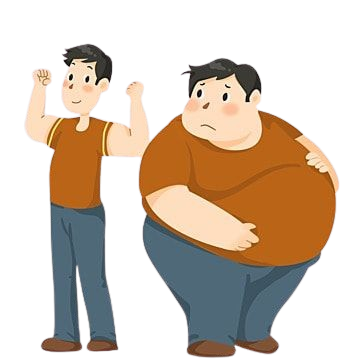

Form BMI
Tahukah kamu jika berat badan yang ideal adalah salah satu indikator sehat atau tidaknya tubuh kita. Dengan berat badan yang ideal, kita dapat menurunkan beberapa resiko penyakit yang diakibatkan oleh berat badan yang berlebih ataupun berat badan yang dibawah standar. Oleh sebab itu, tubuh yang ideal menjadi impian semua orang karna dapat berdampak pada psikologis seseorang juga. Karena begitu besarnya pengaruh berat badan dalam kehidupan kita, yuk ikuti step step by step dibawah ini agar kita mengetahui ideal atau tidaknya berat badan kita.
Keunggulan Fitur
Kalkulator ini hanya boleh digunakan oleh orang dewasa (wanita hamil dan menyusui tidak boleh mengandalkan pembacaan BMI ini) dan tidak ada tindakan yang harus diambil berdasarkan nilainya selain berkonsultasi dengan orang yang memenuhi syarat, seperti dokter
Kalkulator akan memberi anda gambaran tentang perbandingan berat badan anda dengan nilai umum. Indeks Massa Tubuh (atau BMI) dihitung sebagai berat badan anda {dalam kilogram} dibagi dengan kuadrat tinggi badan anda (dalam meter) atau BMI=kg/M2.
Result
Berat Badan Lebih
0
Anda Memiliki Berat Badan Berlebih
Hasil BMI antara 23 dan 25
Anda berada dalam kategori overweight atau berat badan berlebih.
Cara terbaik untuk menurunkan berat badan adalah dengan mengatur kalori makanan yang dikonsumsi dan berolahraga.
Jika BMI anda berada dalam kategori ini maka anda dianjurkan untuk menurunkan berat badan hingga batas normal.
BMI tidak sepenuhnya mewakili diagnosa menyeluruh dari kesehatan tubuh anda dan resiko penyakit. Anda perlu konsultasikan lebih lanjut mengenai resiko yang akan terjadi teerkait penghitungan BMI yang telah anda lakukan.
BEBERAPA PENYAKIT YANG BERASAL DARI KEGEMUKAN
DiabetesHipertensi
Serangan Jantung
Osteoarthritis
